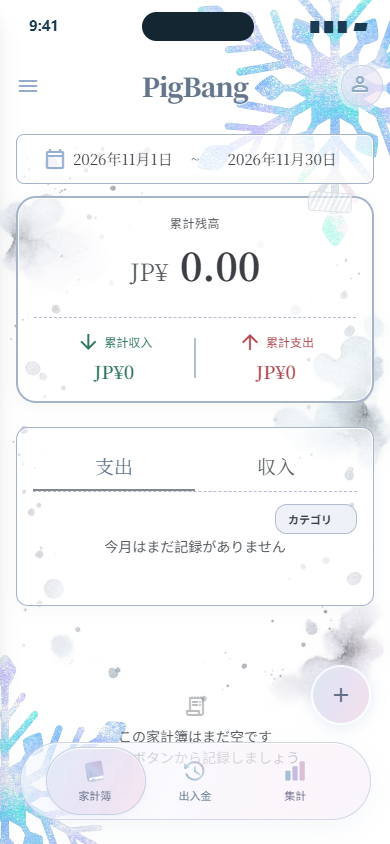
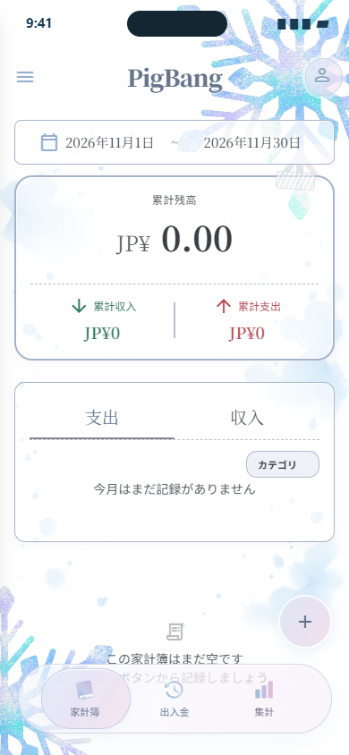
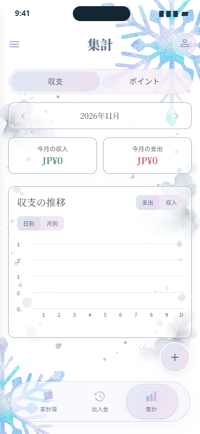
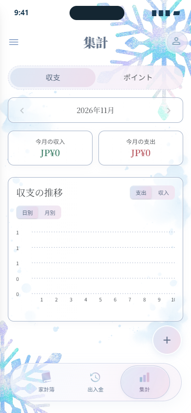

<!doctype html><html lang="zh-CN"><meta charset="utf-8"><meta name="viewport" content="width=device-width,initial-scale=1"><title>浅冰蓝晕染 · 页面预览</title><style>body{margin:0;padding:24px;background:#F7F7F8;color:#42444A;font:15px/1.6 system-ui}main{max-width:820px;margin:auto}h1{font-size:22px;margin:0 0 8px}h2{font-size:18px;margin:0 0 12px}p{margin:0 0 20px}.comparison{margin:24px 0 32px}.pages{display:grid;grid-template-columns:repeat(2,minmax(0,1fr));gap:28px}figure{margin:0}figcaption{margin:0 0 10px}img{display:block;width:100%;height:auto;max-width:390px}a{color:#61758A}@media(max-width:650px){.pages{grid-template-columns:1fr}}</style><main><h1>银灰主题 · 浅冰蓝晕染</h1><p>只调整墨团与散点颜色，保留纹理、范围、透明度及雪花留白。先看预览，再决定是否接入。</p><section class="comparison" id="home"><h2>首页</h2><div class="pages"><figure><figcaption>当前银灰晕染</figcaption></figure><figure><figcaption>浅冰蓝晕染 · 预览</figcaption></figure></div></section><section class="comparison" id="stats"><h2>统计页</h2><div class="pages"><figure><figcaption>当前银灰晕染</figcaption></figure><figure><figcaption>浅冰蓝晕染 · 预览</figcaption></figure></div></section><footer><a href="manifest.json">图层与配色清单</a><p>实际空账本页面；状态栏和安全区为模拟，动态暂停以便对色。</p></footer></main></html>